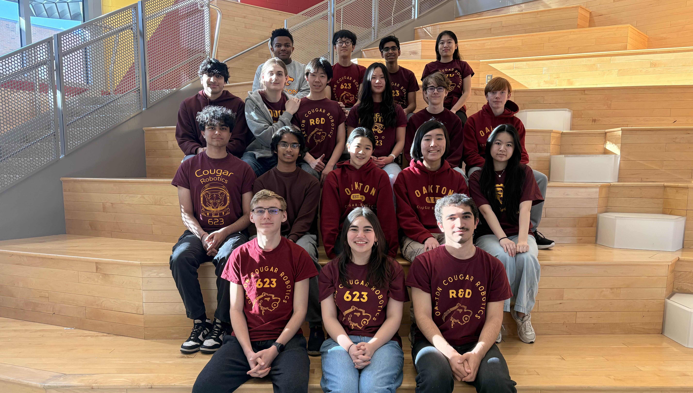

Team 623 has been competing since 2001, and has won numerous awards throughout the years. As a team, we strive for constant improvement and to aim higher each year. To see our full competition and awards history, click here.
Under strict rules, limited time and resources, teams of students are challenged to raise funds, design a team "brand," hone teamwork skills, and build and program industrial-size robots to play a difficult field game against like-minded competitors. It’s as close to real-world engineering as a student can get. Volunteer professional mentors lend their time and talents to guide each team. The FIRST Robotics Competition is designed to be a rigorous and as-exciting competition. Teams build a 36" robot and the competition and robots are just as intense, and students gain the same design, mechanical, and programming skills as their counterparts in FTC. Team 623 is the center of attention, and select members work together as one team. During the build season, we develop, build, and program the robot. In FTC, members find their area of expertise, be it building or programming or etc., and develop the skills that will be needed in FRC where members specialize in either programmers or builders. Mentors help students transition from FTC to FRC since FRC requires different parts and a different programming language.
Click here to learn more about FIRST Robotics Competiton.